Polar Coordinates
Over 12 kilometers from port, a sailboat encounters rough weather and is blown off course by a 16-knot wind (see Figure 1). How can the sailor indicate his location to the Coast Guard? In this section, we will investigate a method of representing location that is different from a standard coordinate grid.
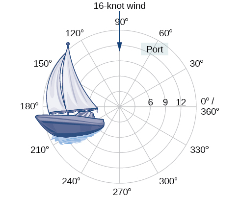
Plotting Points Using Polar Coordinates
When we think about plotting points in the plane, we usually think of rectangular coordinates in the Cartesian coordinate plane. However, there are other ways of writing a coordinate pair and other types of grid systems. In this section, we introduce to polar coordinates, which are points labeled and plotted on a polar grid. The polar grid is represented as a series of concentric circles radiating out from the pole, or the origin of the coordinate plane.
The polar grid is scaled as the unit circle with the positive x-axis now viewed as the polar axis and the origin as the pole. The first coordinate is the radius or length of the directed line segment from the pole. The angle measured in radians, indicates the direction of We move counterclockwise from the polar axis by an angle of and measure a directed line segment the length of in the direction of Even though we measure first and then the polar point is written with the r-coordinate first. For example, to plot the point we would move units in the counterclockwise direction and then a length of 2 from the pole. This point is plotted on the grid in Figure 2.
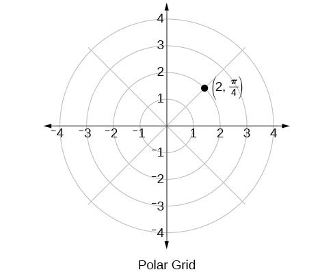
Plotting a Point on the Polar Grid
Plot the point on the polar grid.
Solution
The angle is found by sweeping in a counterclockwise direction 90° from the polar axis. The point is located at a length of 3 units from the pole in the direction, as shown in Figure 3.
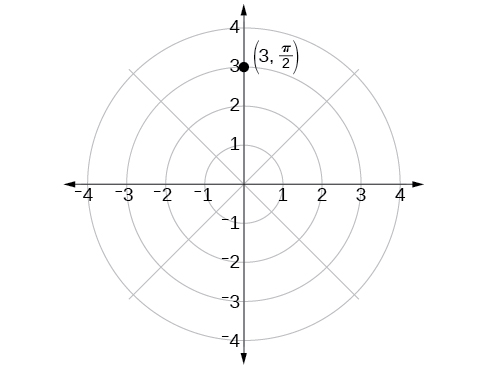
Plotting a Point in the Polar Coordinate System with a Negative Component
Plot the point on the polar grid.
Solution
We know that is located in the first quadrant. However, We can approach plotting a point with a negative in two ways:
- Plot the point by moving in the counterclockwise direction and extending a directed line segment 2 units into the first quadrant. Then retrace the directed line segment back through the pole, and continue 2 units into the third quadrant;
- Move in the counterclockwise direction, and draw the directed line segment from the pole 2 units in the negative direction, into the third quadrant.
See Figure 4(a). Compare this to the graph of the polar coordinate shown in Figure 4(b).
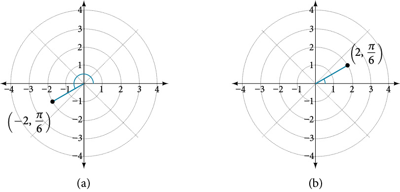
Converting from Polar Coordinates to Rectangular Coordinates
When given a set of polar coordinates, we may need to convert them to rectangular coordinates. To do so, we can recall the relationships that exist among the variables and
Dropping a perpendicular from the point in the plane to the x-axis forms a right triangle, as illustrated in Figure 5. An easy way to remember the equations above is to think of as the adjacent side over the hypotenuse and as the opposite side over the hypotenuse.
![Comparison between polar coordinates and rectangular coordinates. There is a right triangle plotted on the x,y axis. The sides are a horizontal line on the x-axis of length x, a vertical line extending from thex-axis to some point in quadrant 1, and a hypotenuse r extending from the origin to that same point in quadrant 1. The vertices are at the origin (0,0), some point along the x-axis at (x,0), and that point in quadrant 1. This last point is (x,y) or (r, theta), depending which system of coordinates you use.](../../media/CNX_Precalc_Figure_08_03_007.jpg)
Writing Polar Coordinates as Rectangular Coordinates
Write the polar coordinates as rectangular coordinates.
Solution
Use the equivalent relationships.
The rectangular coordinates are See Figure 6.
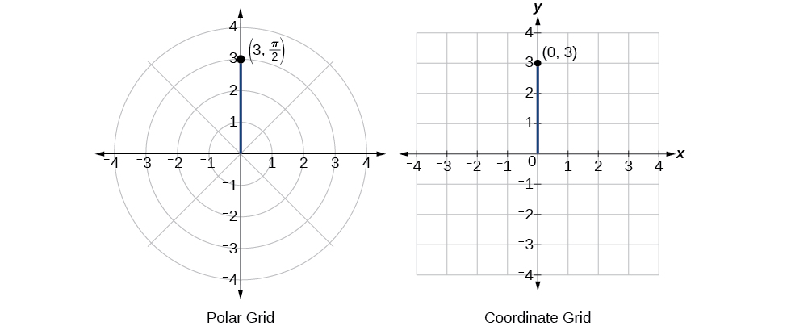
Writing Polar Coordinates as Rectangular Coordinates
Write the polar coordinates as rectangular coordinates.
Solution
See Figure 7. Writing the polar coordinates as rectangular, we have
The rectangular coordinates are also
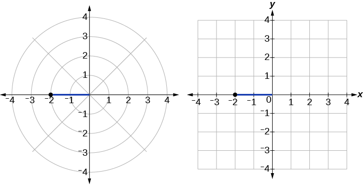
Converting from Rectangular Coordinates to Polar Coordinates
To convert rectangular coordinates to polar coordinates, we will use two other familiar relationships. With this conversion, however, we need to be aware that a set of rectangular coordinates will yield more than one polar point.
Writing Rectangular Coordinates as Polar Coordinates
Convert the rectangular coordinates to polar coordinates.
Solution
We see that the original point is in the first quadrant. To find use the formula This gives
To find we substitute the values for and into the formula We know that must be positive, as is in the first quadrant. Thus
So, and giving us the polar point See Figure 9.
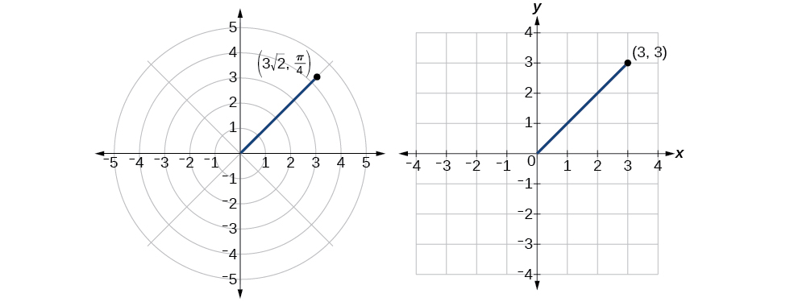
Transforming Equations between Polar and Rectangular Forms
We can now convert coordinates between polar and rectangular form. Converting equations can be more difficult, but it can be beneficial to be able to convert between the two forms. Since there are a number of polar equations that cannot be expressed clearly in Cartesian form, and vice versa, we can use the same procedures we used to convert points between the coordinate systems. We can then use a graphing calculator to graph either the rectangular form or the polar form of the equation.
Writing a Cartesian Equation in Polar Form
Write the Cartesian equation in polar form.
Solution
The goal is to eliminate and from the equation and introduce and Ideally, we would write the equation as a function of To obtain the polar form, we will use the relationships between and Since and we can substitute and solve for
Thus, and should generate the same graph. See Figure 10.
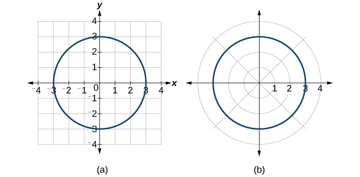
To graph a circle in rectangular form, we must first solve for
Note that this is two separate functions, since a circle fails the vertical line test. Therefore, we need to enter the positive and negative square roots into the calculator separately, as two equations in the form and Press GRAPH.
Rewriting a Cartesian Equation as a Polar Equation
Rewrite the Cartesian equation as a polar equation.
Solution
This equation appears similar to the previous example, but it requires different steps to convert the equation.
We can still follow the same procedures we have already learned and make the following substitutions:
Therefore, the equations and should give us the same graph. See Figure 11.
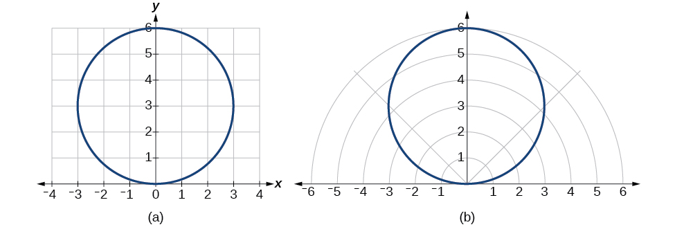
The Cartesian or rectangular equation is plotted on the rectangular grid, and the polar equation is plotted on the polar grid. Clearly, the graphs are identical.
Rewriting a Cartesian Equation in Polar Form
Rewrite the Cartesian equation as a polar equation.
Solution
We will use the relationships and
Identify and Graph Polar Equations by Converting to Rectangular Equations
We have learned how to convert rectangular coordinates to polar coordinates, and we have seen that the points are indeed the same. We have also transformed polar equations to rectangular equations and vice versa. Now we will demonstrate that their graphs, while drawn on different grids, are identical.
Graphing a Polar Equation by Converting to a Rectangular Equation
Covert the polar equation to a rectangular equation, and draw its corresponding graph.
Solution
The conversion is
Notice that the equation drawn on the polar grid is clearly the same as the vertical line drawn on the rectangular grid (see Figure 12). Just as is the standard form for a vertical line in rectangular form, is the standard form for a vertical line in polar form.
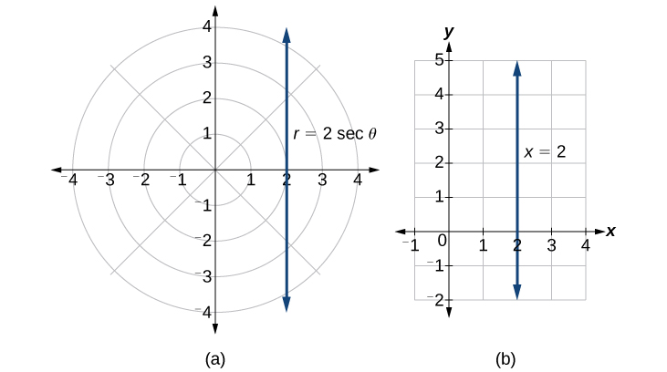
A similar discussion would demonstrate that the graph of the function will be the horizontal line In fact, is the standard form for a horizontal line in polar form, corresponding to the rectangular form
Rewriting a Polar Equation in Cartesian Form
Rewrite the polar equation as a Cartesian equation.
Solution
The goal is to eliminate and and introduce and We clear the fraction, and then use substitution. In order to replace with and we must use the expression
The Cartesian equation is However, to graph it, especially using a graphing calculator or computer program, we want to isolate
When our entire equation has been changed from and to and we can stop, unless asked to solve for or simplify. See Figure 13.
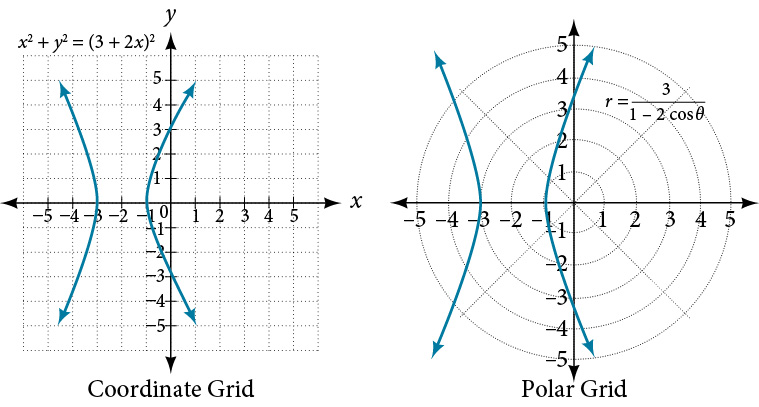
The “hour-glass” shape of the graph is called a hyperbola. Hyperbolas have many interesting geometric features and applications, which we will investigate further in Analytic Geometry.
Analysis
In this example, the right side of the equation can be expanded and the equation simplified further, as shown above. However, the equation cannot be written as a single function in Cartesian form. We may wish to write the rectangular equation in the hyperbola’s standard form. To do this, we can start with the initial equation.
Rewriting a Polar Equation in Cartesian Form
Rewrite the polar equation in Cartesian form.
Solution
This equation can also be written as
Key Equations
| Conversion formulas |
Key Concepts
- The polar grid is represented as a series of concentric circles radiating out from the pole, or origin.
- To plot a point in the form move in a counterclockwise direction from the polar axis by an angle of and then extend a directed line segment from the pole the length of in the direction of If is negative, move in a clockwise direction, and extend a directed line segment the length of in the direction of See Example 1.
- If is negative, extend the directed line segment in the opposite direction of See Example 2.
- To convert from polar coordinates to rectangular coordinates, use the formulas and See Example 3 and Example 4.
- To convert from rectangular coordinates to polar coordinates, use one or more of the formulas: and See Example 5.
- Transforming equations between polar and rectangular forms means making the appropriate substitutions based on the available formulas, together with algebraic manipulations. See Example 6, Example 7, and Example 8.
- Using the appropriate substitutions makes it possible to rewrite a polar equation as a rectangular equation, and then graph it in the rectangular plane. See Example 9, Example 10, and Example 11.
Section Exercises
Verbal
How are polar coordinates different from rectangular coordinates?
Solution
For polar coordinates, the point in the plane depends on the angle from the positive x-axis and distance from the origin, while in Cartesian coordinates, the point represents the horizontal and vertical distances from the origin. For each point in the coordinate plane, there is one representation, but for each point in the polar plane, there are infinite representations.
How are the polar axes different from the x- and y-axes of the Cartesian plane?
Explain how polar coordinates are graphed.
Solution
Determine for the point, then move units from the pole to plot the point. If is negative, move units from the pole in the opposite direction but along the same angle. The point is a distance of away from the origin at an angle of from the polar axis.
How are the points and related?
Explain why the points and are the same.
Solution
The point has a positive angle but a negative radius and is plotted by moving to an angle of and then moving 3 units in the negative direction. This places the point 3 units down the negative y-axis. The point has a negative angle and a positive radius and is plotted by first moving to an angle of and then moving 3 units down, which is the positive direction for a negative angle. The point is also 3 units down the negative y-axis.
Algebraic
For the following exercises, convert the given polar coordinates to Cartesian coordinates. Remember to consider the quadrant in which the given point is located when determining for the point.
Solution
Solution
For the following exercises, convert the given Cartesian coordinates to polar coordinates with Remember to consider the quadrant in which the given point is located.
Solution
Solution
Solution
For the following exercises, convert the given Cartesian equation to a polar equation.
Solution
Solution
Solution
Solution
Solution
Solution
For the following exercises, convert the given polar equation to a Cartesian equation. Write in the standard form of a conic if possible, and identify the conic section represented.
Solution
or circle
Solution
line
Solution
line
Solution
hyperbola
Solution
circle
Solution
line
Graphical
For the following exercises, find the polar coordinates of the point.
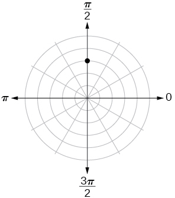
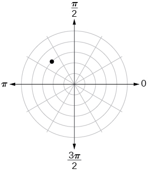
Solution
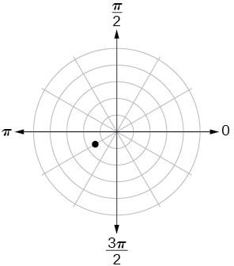
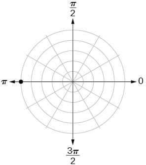
Solution
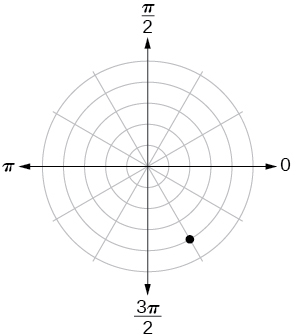
For the following exercises, plot the points.
Solution
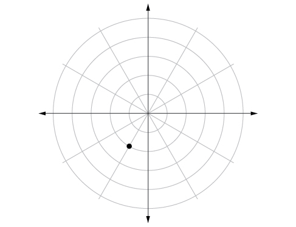
Solution
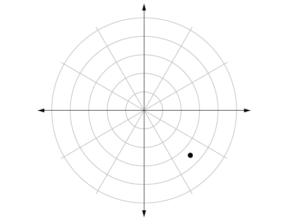
Solution
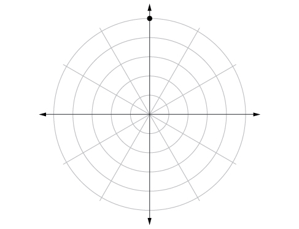
Solution
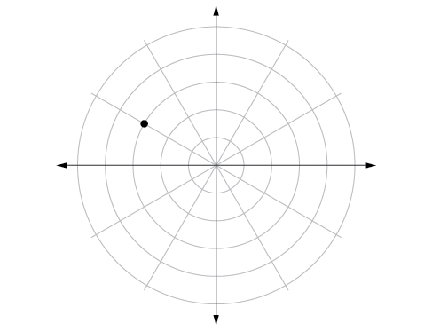
Solution
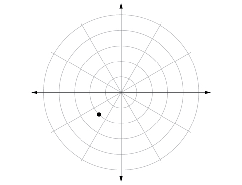
For the following exercises, convert the equation from rectangular to polar form and graph on the polar axis.
Solution
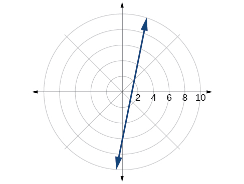
Solution
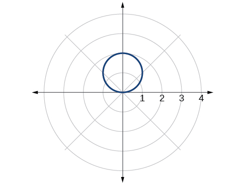
Solution
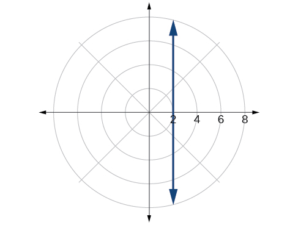
Solution
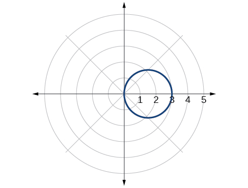
For the following exercises, convert the equation from polar to rectangular form and graph on the rectangular plane.
Solution
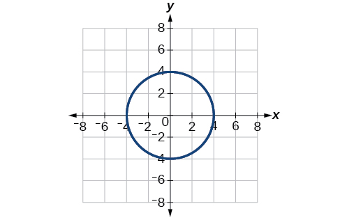
Solution
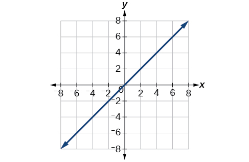
Solution
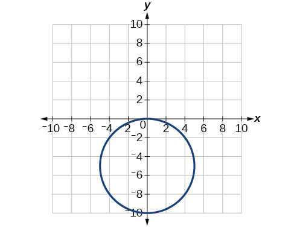
Technology
Use a graphing calculator to find the rectangular coordinates of Round to the nearest thousandth.
Solution
Use a graphing calculator to find the rectangular coordinates of Round to the nearest thousandth.
Use a graphing calculator to find the polar coordinates of in degrees. Round to the nearest thousandth.
Solution
Use a graphing calculator to find the polar coordinates of in degrees. Round to the nearest hundredth.
Use a graphing calculator to find the polar coordinates of in radians. Round to the nearest hundredth.
Solution
Extensions
Describe the graph of
Describe the graph of
Solution
A vertical line with units left of the y-axis.
Describe the graph of
Describe the graph of
Solution
A horizontal line with units below the x-axis.
What polar equations will give an oblique line?
For the following exercise, graph the polar inequality.
Solution
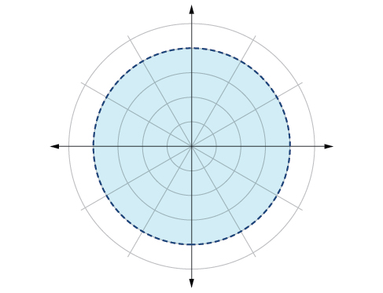
Solution
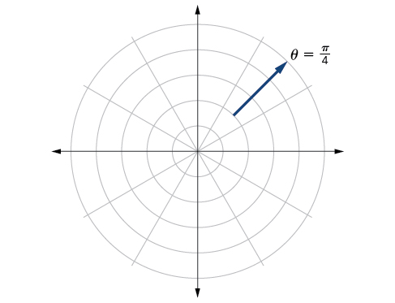
Solution
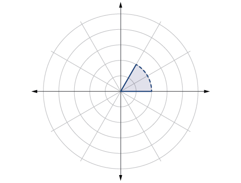
Analysis
There are other sets of polar coordinates that will be the same as our first solution. For example, the points and will coincide with the original solution of The point indicates a move further counterclockwise by which is directly opposite The radius is expressed as However, the angle is located in the third quadrant and, as is negative, we extend the directed line segment in the opposite direction, into the first quadrant. This is the same point as The point is a move further clockwise by from The radius, is the same.